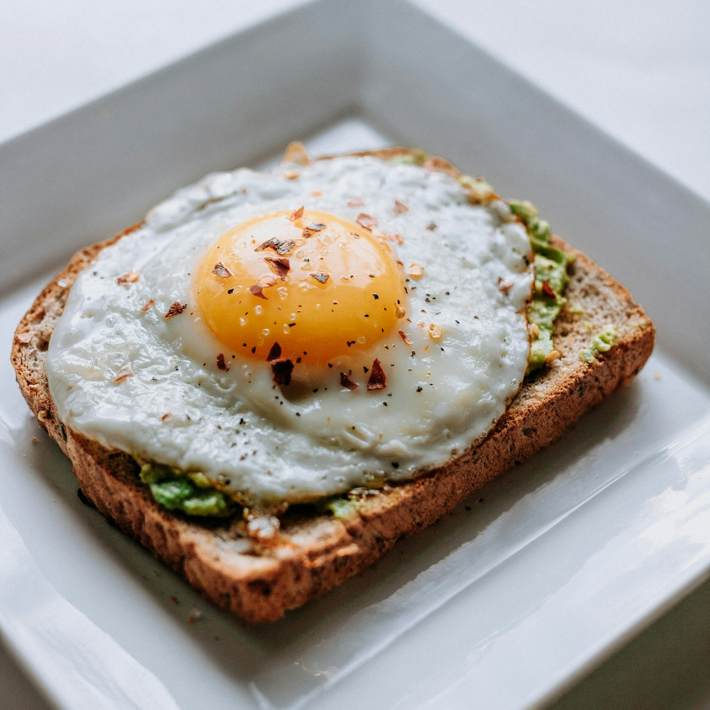

Address & Counter
Halfpenny’s Cafe
301 S. Tryon St., Suite 30
Charlotte, NC 28282
Lower Plaza Atrium Level in Two Wells Fargo Center
We are open Monday through Friday from 7:00 AM to 3:30 PM for morning breakfast rushes, midday deli lunches, and afternoon espresso breaks in Two Wells Fargo Center.

Everything you need for dining in or ordering office breakfast & lunch catering.
Halfpenny’s Cafe
301 S. Tryon St., Suite 30
Charlotte, NC 28282
Lower Plaza Atrium Level in Two Wells Fargo Center
Monday – Friday:
7:00 AM – 3:30 PM
Saturday – Sunday: Closed
All-day breakfast served open to close.
Phone: (704) 342-9697
Call ahead for immediate takeout, morning breakfast biscuit boxes, or office sandwich platters.